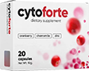
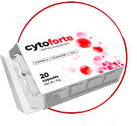

Zapalenie pęcherza - aktualny i powszechny problem wśród kobiet. Tylko w Polsce codzienne rejestruje się rzędu 26-36 mln przypadków tej choroby. W związku z budową fizjologiczną ciala (krótka i szeroka cewka skłonna do przenikania mikroorganizmów) kobiety cierpią na zapalenie pęcherza 30 razy częściej niż mężczyźni. Według statystyk co czwarta kobieta przechodzi tę chorobę w ciągu swojego życia co najmniej 6 razy, a 32% cierpi na przewlekłe zapalenie.
ZNOWU ŚCIŚNIETY W SUPEŁ?
cytoforte
Niszczące uderzenie
zapalenia pęcherza i jego objawów

PODSTAWOWE SYMPTOMY ZAOSTRZENIA ZAPALENIA
CZĘSTE WIZYTY W TOALECIE
UCZUCIE NIEPEŁNEGO OPRÓŻNIENIA
PIECZENIE I SZCZYPANIE PODCZAS ODDAWANIA MOCZU
ZMĘTNIENIE I ZMIANA KOLORU MOCZU
WZROST TEMPERATURY CIAŁA

Zapalenie to proces zapalny błony śluzowej pęcherza moczowego.
W większości przypadków jest
spowodowany infekcją. Główna jego przyczyna (do 80%) to bakteria "pałeczka nerkowa" - E.coli.
Bakterie złośliwe przedostają się do pęcherza przez cewkę moczową ze zbiorników infekcyjnych poniżej
pochwy (zapalenie sromu i zapalenie pochwy o różnej etiologii) i jelita (w wyniku nieprawidłowej higieny
osobistej, niewłaściwego mycia).
Wysoką częstość występowania zapalenia pęcherza moczowego u kobiet
sprzyjają szczególne cechy budowy anatomicznej układu moczowo-płciowego.
Cewka moczowa (ostium urethrae internum)) u kobiet jest krótsza i szersza, dlatego też bakterie są
znacznie łatwiejsze do przemieszczenia przez nią.
Objawy kliniczne, jak również objawy zapalenia
pęcherza u kobiet, mają jasny obraz, jeśli chodzi o ostry proces.
Objawy przewlekłego zapalenia
pęcherza są zwykle „zamazane” - ich intensywność jest mniej wyraźna, pojawiają się, a następnie znikają.
IDEALNIE SKŁAD W CytoForte. Bez antybiotyków. Bez sztucznych komponentów
-

-
Wyciąg z żurawiny
-
 Wyciąg z rumianku
Wyciąg z rumianku -
 Cynk
Cynk -
 Witamina E
Witamina E -
Witaminy z grupy B
Wyciąg z żurawiny ma działanie bakteriobójcze i niszczy patogeny komórkowe E. coli
Wyciąg z rumianku: wspomaga rozluźnienie mięśni w kanale moczowo-płciowym, co szybko łagodzi ból
Cynk: regeneruje tkankę śluzową uszkodzoną przez infekcję
Witamina E: zapobiega zapaleniu w organizmie i przywraca układ moczowo-płciowy
Witaminy z grupy B: produkuje przeciwciała, które hamują patogeny w organizmie
Przejdź niżej i dowiedz się więcej
cyto forte - OPTYMALNIE ZRÓWNOWAŻONE POŁĄCZENIE DOKŁADNIE WYBRANYCH SKŁADNIKÓW
-

1 produkt = 2 działania
2 w 1 -

Odstraszanie bakterii chorobotwórczych
-

Ochrona dróg moczowych
DZIAŁANIE ELEMENTÓW JEST UKIERUNKOWANE W CELU ELIMINACJI NAGŁYCH PRZYCZYN ZAKAŻEŃ UKŁADU MOCZOWEGO, SZYBKIE USUWANIE ZRÓWNOWAŻONYCH OBJAWÓW I ZAPOBIEGANIE CHOROBIE POWTARZAJĄCEJ W PRZYSZŁOŚCI
Bioaktywna formuła CytoForte zapewnia leczenie zapalenia pęcherza moczowego w
8 etapach
- POZWALAJĄ BAKTERIE PRZYŁĄCZAJĄCE BAKTERIE DO KOMÓREK UROTELIUM 1
- DEFORMUJĄ KOMÓRKĘ BAKTERYJNĄ 1
- USZKODZENIA BAKTERII FIMBRIES I BLOK ICH SYNTEZA 1
- ZAPOBIEGANIE BAKTERIALNEJ FORMACJI BIOFILMU 2
- PRZYCZYNIĆ SIĘ DO ODDYCHANIA BAKTERII Z DROGI WSTĘPNEJ 1
- WPŁYW NA KWASOWOŚĆ MOCZU:
NORM - ŚRODOWISKO KWASOWE (pH = 7) - PROMUJE WPŁYW NA TRANSMISJĘ MOCZOWĄ
- ZWIĘKSZA STABILNOŚĆ ORGANIZMU DO ZAKAŻEŃ. WZMOCNIENIE SYSTEMU ODPORNOŚCIOWEGO
Aleksander Wasilewski
Doktor urolog, doktor nauk medycznych
Moje zalecenia dla pacjentów z zapaleniem pęcherza - rezygnacja z obcisłej bielizny
syntetycznej, która jest niewygodna. Kolejne to odpoczynek w łóżku, jeśli to możliwe. Po trzecie,
ale co najważniejsze - przyjmowanie suplementów
CytoForte.
Obecnie lek ten jest jedynym szybko działającym lekiem, który nie ma żadnych skutków ubocznych, w przeciwieństwie do antybiotyków. Rozpoczęcie leczenia zajmuje tylko 17 minut po przyjęciu CytoForte. Wysoka skuteczność CytoForte wynika z kompleksu substancji czynnych, którym bakterie, czynniki sprawcze zapalenia pęcherza, nie rozwijają oporności. Narzędzie skutecznie niszczy patogeny w układzie moczowo-płciowym i eliminuje nieprzyjemne objawy choroby. W trakcie badań klinicznych odnotowano: miesięczny cykl przyjmowania suplementów zapewnia brak bakterii E..Coli w 98% przypadków i zapobiega nawrotowi choroby w przyszłości .

OPAKOWANIE cytoforte ZAWIERA 20 KAPSUŁEK
-

20 kapsułek w jednym opakowaniu
20 kapsułek
-

1 - rano , 1 - przed snem
2 kapsułki dziennie
-
Zalecany cykl leczenia - 30 dni
3 opakowania
Ponieważ składniki roślinne w kompozycji CytoForte nie tworzą odporności bakterii i nie przyczyniają się do powstawania ich odporności, można je przyjmować przez długi czas (do 1 miesiąca) i powtarzać cykle przez cały rok, jeśli to konieczne.
Jak przyjmować CytoForte:
-
2 kaps./ dziennie W CIĄGU MNIEJ NIŻ 1 MIESIĘCYPO TERAPII IMP *
ANTYBIOTYKAMI -
2 kaps./ dzień W CIĄGU MNIEJ NIŻ 1 MIESIĘCYZ CZĘSTOTLIWĄ POWTARZAJĄCĄ UTI *
(> 3 UMOWY W ROKU) -
1 kaps./ dzień W CIĄGU MNIEJ NIŻ 1 MIESIĄCAW ZWIĘKSZONYM RYZYKU
ROZWOJU IMP*
SKŁADNIKI ŚRODKA WSPIERAJĄ WZMOCNIENIE OCHRONY ANTYMIKROBIOLOGICZNEJ I „UBEZPIECZENIA” PRZECIWKO POWTÓRNYM ZAOSTRZENIOM UTI *
* UTI - ZAKAŻENIA UKŁADU MOCZOWEGO
Do możliwych zastosowań CytoForte należą: okres po antybakteryjnej terapii zakażeń dróg moczowych, w przypadku częstych powtarzających się epizodów infekcji dróg moczowych, a także w okresie zwiększonego ryzyka ich rozwoju na tle niekorzystnych czynników (zmiany sezonowe, klimat gorący / wilgotny, hipotermia, sytuacje stresujące , podróże, niekorzystne warunki higieniczne).
OPINIE NASZYCH KLIENTÓW O DZIAŁANIU CYTOFORTE
98% nabywców poleca produkty do zakupu

Najważniejsze podczas ataku zapalenia pęcherza - cytoforte i
odpoczynek seksualny. Jeśli przestrzegasz tych zasad, możesz pozbyć się odczuwalnych nieprzyjemnych
objawów w ciągu jednego dnia. Ogólnie rzecz biorąc, nie rozumiem ludzi, którzy sypią się
antybiotykami, gdy istnieje taki wspaniały analog na bazie roślinnej. A tak przy okazji, nie próbuj
leczyć poduszkami grzewczymi - wręcz przeciwnie, stworzy to sprzyjające środowisko dla reprodukcji
bakterii.
Olga, 34 lata

Nigdy bym nie pomyślał, że znajdę przynajmniej coś użytecznego w
Internecie. Po raz kolejny, kiedy naciskała, zaczęła szukać nowych metod leczenia zapalenia pęcherza
i znalazła CytoForte. Nie mogę tego powiedzieć od razu, ale lek wykazał swoją skuteczność.
Następnego dnia skurcze zniknęły podczas oddawania moczu i popędu. To właśnie chciałbym zauważyć -
nie było nawrotu po pół roku później. Chociaż zdiagnozowano u mnie postać przewlekłą.
Lucyna O. 37 lat
To naprawdę daje szybki efekt! Wystąpiło przewlekłe odmiedniczkowe
zapalenie nerek, jako trochę przeziębienia lub przeróbki. Był leczony przez prawie 4 lata, zarówno
antybiotykami, jak i środkami ludowymi. Próbowałem wielu rzeczy, nie było specjalnych ulepszeń. Za
radą lekarza CytoForte odbył kurs w zeszłym roku i wszystko poszło. Od tego czasu ból się nie czuł.
Doradzam teraz wszystkim.
Irena F. 44 lata